How to send data to rtstatistics.com in 5 minutes
rtstatistics.com provides cloud based services for data to be sent and queried in real-time. Just in 5 minutes, you can start sending data to rtstatistics.com. Basically you just need to:
- Create a dataset, get the ID and the send key of the newly created dataset
- Send data to the dataset
- (Optionally) Check to see if data has been received successfully
Step 1: Go to https://manage.rtstatistics.com and log in
Haven’t registered? Don’t worry, you don’t need to register! rtstatistics.com allows you to log in with your existing GitHub, BitBucket, Google, or Microsoft account. If you are a developer, chances are that you already have at least one if not all of those accounts.
This is what you will see on the log in page:
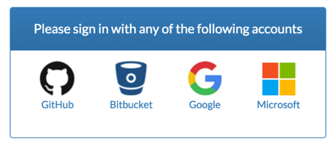
After clicking on one of these icons, you will be redirected to the corresponding identity provider’s website. There, you need to log in and authorize rtstatistics.com to access your identity and email addresses. Authorization is only needed during the first time.
Your email addresses will be used by rtstatistics.com to link your identities from different providers. For example, if you have registered an email address in both GitHub and Google, in case GitHub is down you can still log in through Google.
Then you will be redirected back to rtstatistics.com and will be asked to acknowledge the usage agreement and privacy notice. And finally you will see the the API console which is based on swagger-ui. We will build a more advanced and cool management console in the future. For now all management operations must be done through swagger-ui or API calls.
There are two sets of APIs, the Management API and the Data API. You can switch between them in the API console. For Management API, you don’t need to specify the API Key if you’ve logged in. For Data API, you always need to specify the API Key.
If you are a hard core developer probably you don’t want to log in just for seeing the API console, in that case you can simply go to https://api.rtstatistics.com/ and use the API Keys for authentication.
And of course, you can write programs or use tools to invoke Manage API and Data API directly.
Step 2: Create a Dataset
Before sending the data, a Dataset must be created for the data to go into. This can be done through the Management API.
- Click on “datasets” to see all its endpoints
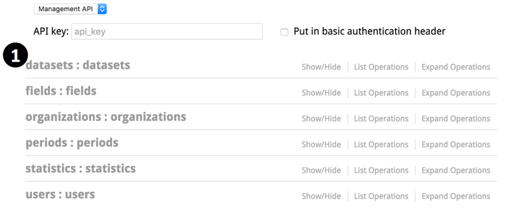
- Click on “POST /datasets” to see the details
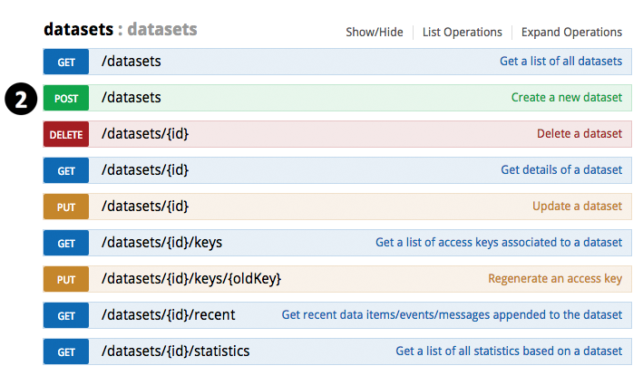
- Scroll down and click on the “Model Schema” content on the right to have the sample value copied to parameter value input area
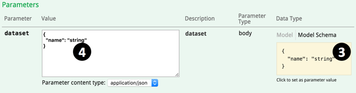
-
Change the name “string” to something you like, for example “My Dataset 1”
- Click the “Try it out!” button
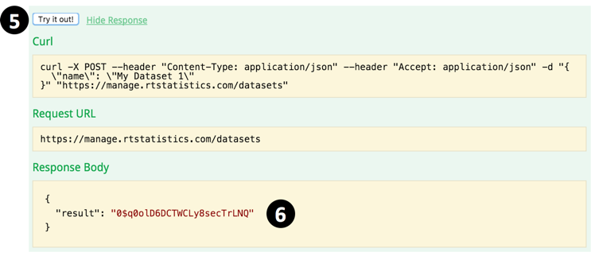
- Scroll down to see the response. You should be able to see the ID of the newly created Dataset in the response. Now select and copy the ID, it will be used later.
Step 3: Get the API Keys of the Dataset
API Key is required for using the Data API. For sending to a Dataset you need the Send Key, for query a Dataset you need the Query Key. Dataset API Keys are randomly generated strings. If you think the key may have been leaked you can regenerate another one.
Now you need to find out what the API Keys are for the Dataset you just created.
- In “datasets” section, click on “GET /datasets/{id}/keys” to see the details
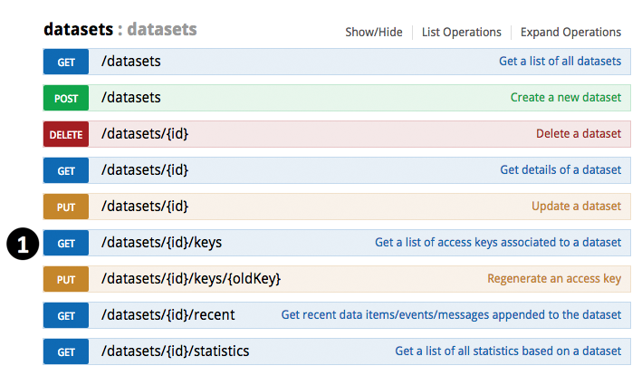
- Paste the ID of the Dataset you just created as the parameter value
- Click the “Try it out!” button
- Scroll down to see the response. You should be able to see the API Keys in the response. There are two Send Keys and two Query Keys
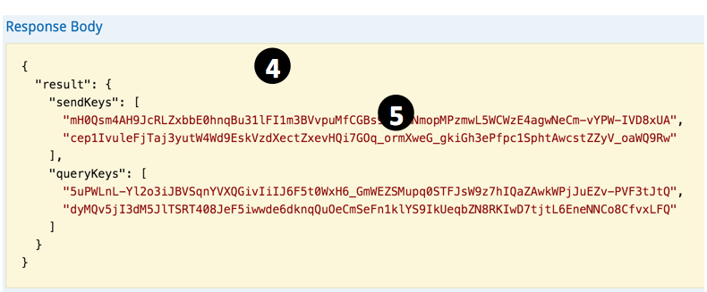
- Now select and copy one of the Send Keys. It will be used in the following steps.
Step 4: Send the data
For convenience, you’d better open https://api.rtstatistics.com in a new browser window or tab for sending new data items while keeping existing window or tab for querying.
Now switch to the sending window.
- Paste the Send Key as the API Key
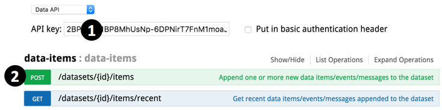
- Expand “data-items” -> “POST /datasets/{id}/items”
- Paste the ID of the Dataset as the “id” parameter
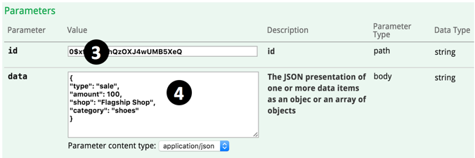
- Input your data as JSON object (for sending a single data item) or array (for sending multiple data items in one go).
For example, you can try:
{“type”: “sale”, “amount”: 100, “shop”: “Flagship Shop”, “category”: “shoes”}
Or:
[{“location”: “vic-mel-cbd-flinders-192”, “level”: “warn”, “sensor1”: 5, “sensor2”: 300, “sensor3”: 23},
{“location”: “vic-mel-cbd-flinders-193”, “level”: “log”, “sensor1”: 0, “sensor2”: 2, “sensor3”: 0},
{“location”: “vic-mel-cbd-flinders-194”, “level”: “log”, “sensor1”: 2, “sensor2”: 11, “sensor3”: 9}] - Click the “Try it out!” button.
- Scroll down to see the response. You should be able to see the generated ID(s) of your data item(s). In case there is any JSON syntax error in the input, you will see the error message in the response.
Setp 5: Check to see if the data had been successfully received
rtstatistics.com allows you to retrieve the last 10 data items you’ve sent to it. This would be handy during trouble shooting.
Now switch back to the querying window,
- Find the datasets section
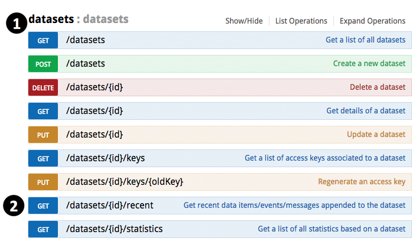
- Expand “GET /datasets/{id}/recent”
- Paste the ID of the Dataset
- Click the “Try it out!” button
- Scroll down to see the response. You should be able to see the last 10 data items you’ve sent to the Dataset. Since data items are presented as plain strings in JSON object, they are escaped.
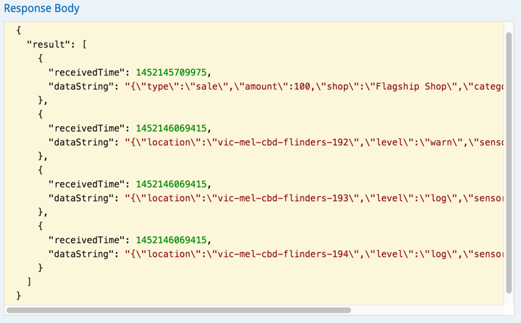
The numbers in the “receivedTime” field are milliseconds since 1970 Jan 1 UTC.
Done!
Now you’ve successfully created a Dataset and sent data items into it. Quite easy, isn’t it? Next, maybe you would like to have a look at: Tutorial: How to setup real-time statistics in 5 minutes
If there is any issue or question, feel free to send to support@rtstatistics.com.